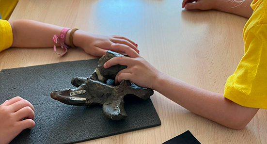
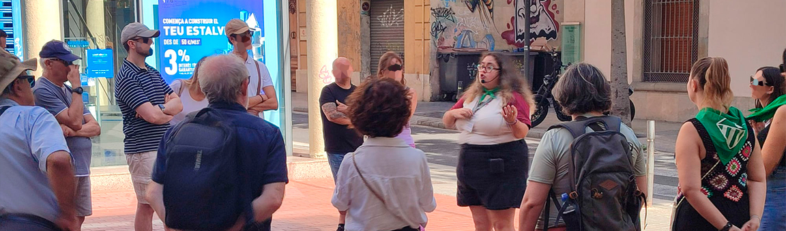
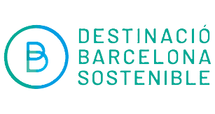
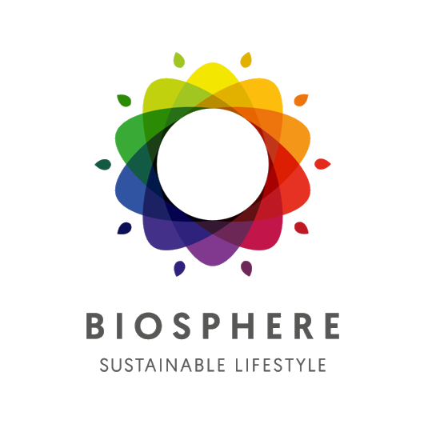
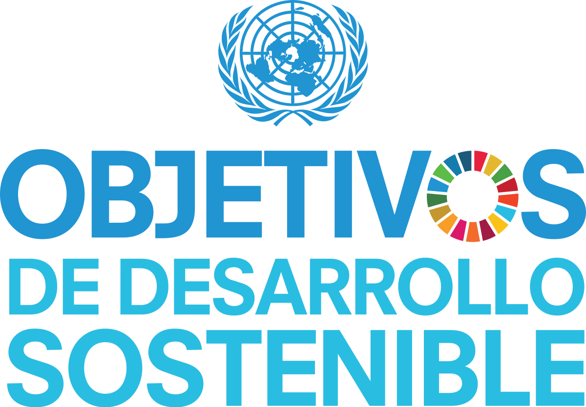
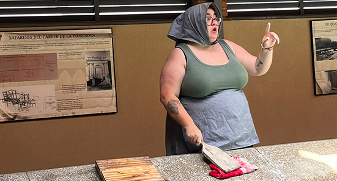

ÁREA DE EDUCACIÓN Y CULTURA
La línea principal de trabajo de ARCA TEMÁTICA está dirigida a personas de todas las edades. Cada actividad se adapta a los conocimientos y las necesidades de cada colectivo.
ARCA TEMÁTICA nace de la unión de un conjunto de profesionales del mundo de la educación, la cultura, el ocio y el espectáculo, con el fin de ofrecer
aquellos servicios y actividades que más interesan a los centros educativos, entidades, asociaciones, empresas y administración pública.
El rigor, la responsabilidad y la seriedad son los criterios básicos de trabajo para poder ofrecer un producto sostenible de calidad.


En Arca impulsamos una producción artística responsable, utilizando materiales conscientes y procesos eficientes para crear proyectos escenográficos únicos que respetan el medio ambiente y el entorno.

Tenemos la certificación Biosphere, que avala nuestro compromiso en la lucha contra el cambio climático.
N.º de certificado: BAT 054/2022 RTI
Estamos convencidos de que las actividades al aire libre que nos permiten disfrutar de nuestro rico patrimonio cultural son muy beneficiosas para el desarrollo cognitivo.

La línea principal de trabajo de ARCA TEMÁTICA está dirigida a personas de todas las edades. Cada actividad se adapta a los conocimientos y las necesidades de cada colectivo.

El Área de Espectáculos de ARCA TEMÁTICA cuenta con artistas de diversos ámbitos (música, teatro, cine y circo) para crear cualquier tipo de espectáculo a medida.

ARCA TEMÁTICA diseña y ofrece un amplio abanico de servicios y actividades pensados para la diversión y el entretenimiento, siempre con una base pedagógica de trabajo.
Disponemos de un gran repertorio de clientes en el que se puede apreciar nuestra larga trayectoria en el sector. La confianza que depositan en nosotros es el mejor reflejo de la calidad de nuestros servicios y de nuestro compromiso con la excelencia.